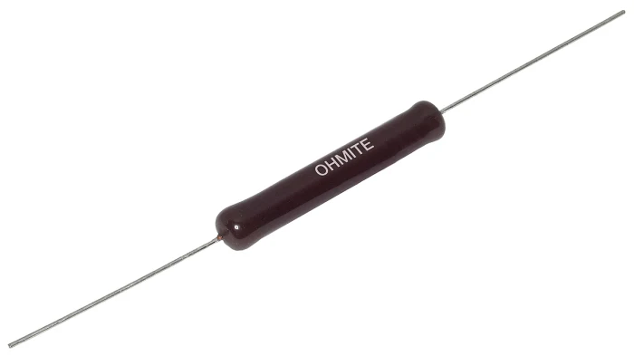
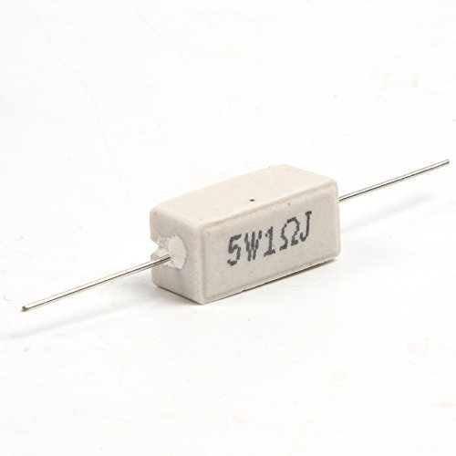
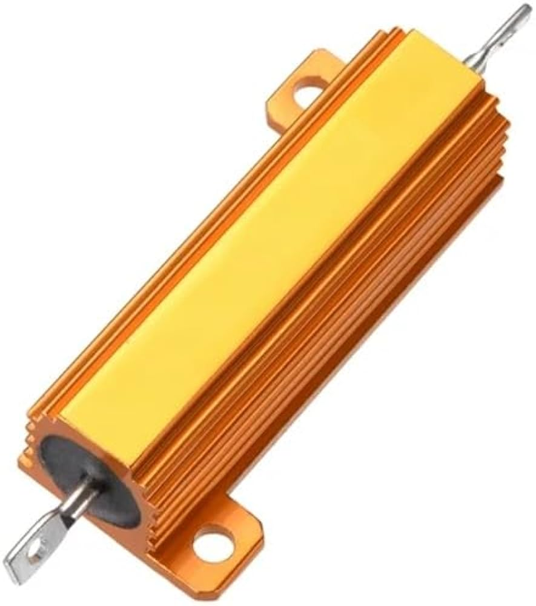
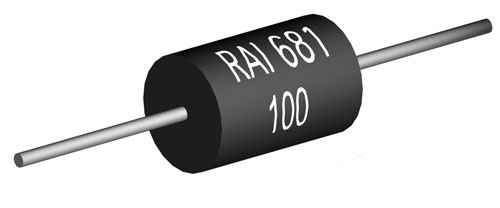
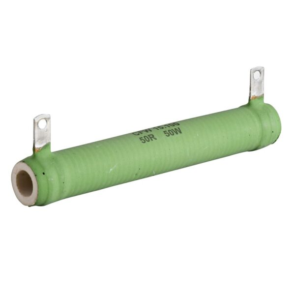

Welcome to ElectroSpecs | Explore Electronics Components | Learn & Build 🚀

AXIAL LEAD WIREWOUND RESISTOR

CEMENT WIREWOUND RESISTOR

CHASIS MOUNTED WIREWOUND RESISTOR

PRECISION WIREWOUND RESISTOR

HIGH FREQUENCY WIREWOND RESISTOR